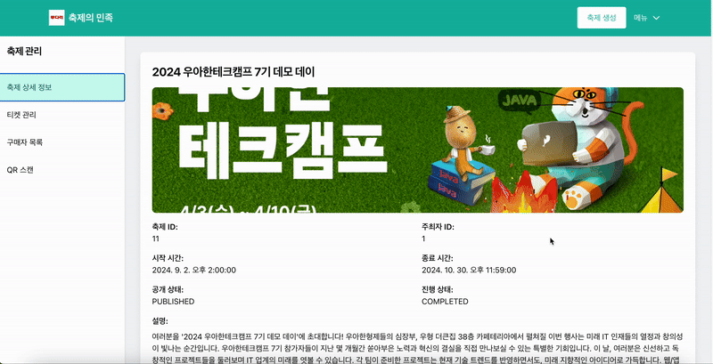
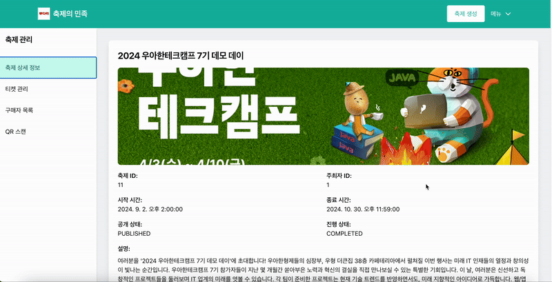

김현종
Backend Developer
About Me
안녕하세요, 변화의 중심에 있고 싶은 백엔드 개발자 김현종입니다. 저는 기술을 통해 사람들의 일상을 더 편리하게 만드는 것을 목표로 합니다.
객체지향 설계에 대해 깊은 관심을 가지고 있으며, 이를 바탕으로 효율적이고 확장 가능한 서버 시스템을 구축하는 데 주력하고 있습니다. 새로운 기술을 학습하고 적용하는 것을 즐기며, 특히 대규모 데이터 처리 및 동시성에 관심이 많습니다.
팀과의 협업을 통해 더 나은 솔루션을 만들어내는 과정에서 큰 보람을 느낍니다. 효과적인 의사소통과 지식 공유를 통해 팀 전체의 성장에 기여하고자 노력합니다.
저는 다음과 같은 가치를 중요시합니다.
첫째, "효과적인 의사소통"과 "균형 잡힌 팀워크"입니다. 우아한테크캠프에서 진행한 `축제의 민족` 프로젝트에서는 제한된 리소스 환경에서의 대규모 트래픽 처리라는 도전적인 과제를 맡았습니다. 이 과정에서 단순히 기술적 해결책을 제시하는 것을 넘어, 팀원들과 함께 시스템의 한계점을 분석하고 개선 방향을 도출했습니다. 특히 결제 시스템 설계 시에는 팀원들과의 적극적인 토론을 통해 비동기 처리 방식을 채택했고, 이는 시스템 성능 향상으로 이어졌습니다.
둘째, "지속적인 학습과 기술적 도전"입니다. 현재는 대규모 트래픽 처리와 시스템 안정성 향상에 집중하고 있습니다. 매주 진행하는 스터디와 함께, 동시성 제어에 대한 심도 있는 학습을 진행하고 있습니다.
셋째, "문제 해결과 개선에 대한 끊임없는 고민"입니다. 모든 프로젝트에서 단순히 기능 구현에 그치지 않고, 시스템의 안정성과 확장성을 고려한 설계를 지향합니다. 현재는 대용량 데이터 처리와 트랜잭션 관리에 대한 이해를 높이는 데 집중하고 있습니다.
새로운 도전을 두려워하지 않고, 팀과 함께 성장하며, 사용자에게 진정한 가치를 전달하는 서비스를 만들어가는 것이 제가 지향하는 개발자의 모습입니다.
제가 참여한 서비스가 많은 사람들의 불편함을 해소하고, 그들의 삶에 긍정적인 변화를 가져다주는 것이 제 꿈입니다. 이를 위해 끊임없이 학습하고 성장하며, 더 나은 개발자가 되기 위해 노력하고 있습니다.
연락처
교육
- 우아한테크캠프 7기: 2024.06 ~ 2024.08
- 삼성청년SW아카데미(SSAFY): 2023.01 ~ 2023.12
- 전남대학교 전기공학과: 2019.03 ~ 2023.02
기술 스택
Backend
Database
DevOps & Tools
프로젝트
기간: 2024-08 ~ 2024-08 (3주)
프로젝트 설명
제한된 리소스 환경(AWS t3.small EC2 인스턴스 2대, RDS, Redis)에서 안정적인 운영을 목표로 하는 페스티벌 티켓 예매 서비스입니다. 순간적인 대규모 트래픽 상황에서도 안정적으로 동작하도록 설계되었으며, 효율적인 대기열 관리와 비동기 처리를 통해 사용자 경험을 최적화했습니다.
담당 업무
- 결제 비동기 처리 시스템 구현
- CompletableFuture와 커스텀 스레드 풀을 활용한 비동기 결제 처리 구조 설계
- Caffeine 캐시를 도입하여 결제 상태 관리 최적화
- 결제 성공 및 실패에 따른 후속 처리 작업 자동화
- MySQL 배치 처리 최적화
- ConcurrentLinkedQueue를 사용한 인메모리 큐 시스템 구축
- JdbcTemplate을 활용한 배치 INSERT 쿼리 최적화
- 대량의 주문 데이터 효율적 처리 구현
- 장애 대응 메커니즘 구현
- 결제 실패 및 시스템 장애 시 데이터 정합성 보장을 위한 보상 트랜잭션 처리 로직 개발
- 프론트엔드 화면 구성
- React를 활용한 사용자 인터페이스 개발
사용 기술
- Java 17, Spring Boot 3.3.2, MySQL 8.0.35, Redis
- React, K6, Prometheus, Grafana
- AWS Application LoadBalancer, AWS EC2, AWS RDS
 

기간: 2023-07-04 ~ 2023-08-18
프로젝트 설명
공유오피스 등을 대상으로 해 서로 함께 주문하여 배달비를 아낄 수 있는 서비스입니다. 통신이 가능한 IoT 기기인 box 및 주문할 가게와 연동된 채팅방을 생성해 메뉴를 선택하고 주문 후 box에서 배달된 음식을 찾아갑니다.
담당 업무
- 채팅방 서버 구현
- Spring WebSocket을 사용하여 실시간 양방향 통신 구현
- 채팅방 생성, 참여, 나가기 등의 기능을 RESTful API로 설계 및 구현
- Stomp over WebSocket을 이용한 실시간 채팅 시스템 개발
- STOMP 프로토콜을 사용하여 효율적인 메시지 라우팅 구현
- 사용자 인증 및 권한 관리를 위한 인터셉터 구현
- Kafka를 활용한 메시징 시스템 구축
- 비동기 처리를 통한 시스템 성능 향상 및 확장성 확보
- 주문 처리, 알림 발송 등의 이벤트를 Kafka 토픽으로 관리
- MongoDB를 이용한 채팅 내역 관리 시스템 개발
- 비정형 데이터인 채팅 메시지를 효율적으로 저장 및 조회
- 인덱싱을 통한 빠른 검색 기능 구현
사용 기술
- Java 17, Spring Boot 3.0.8, Spring Data JPA, Spring Security, JWT
- Redis, Kafka, MongoDB, MySQL
- Docker, AWS Lightsail, Jenkins, Nginx